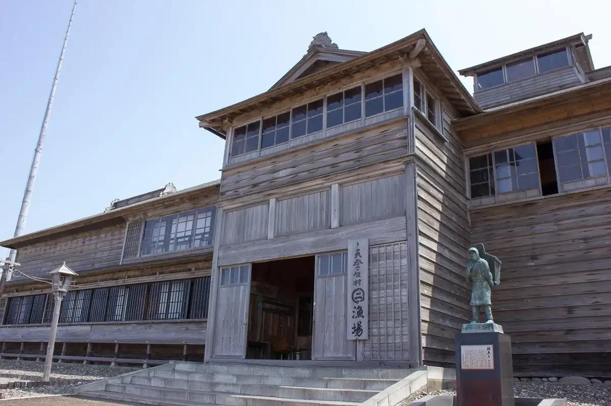
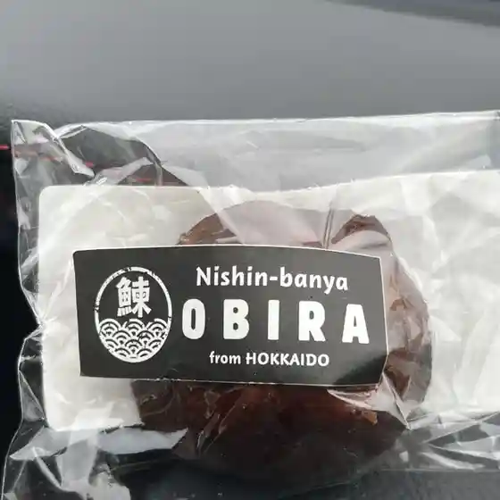
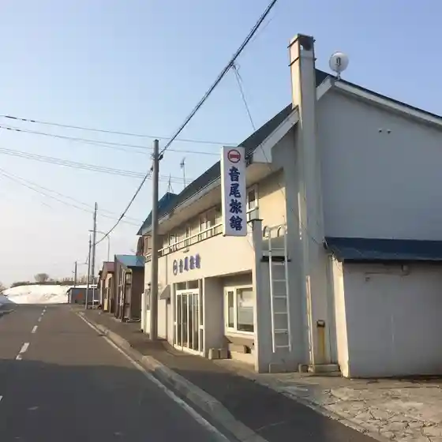
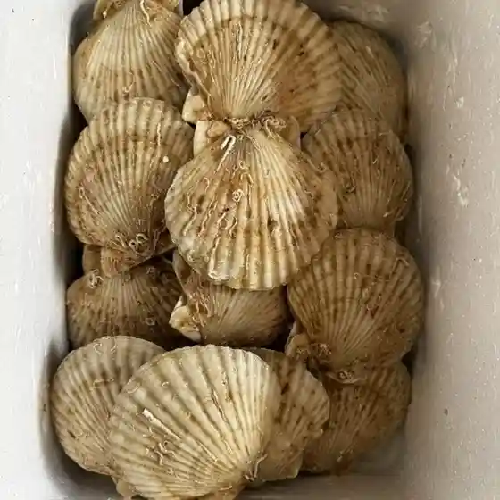
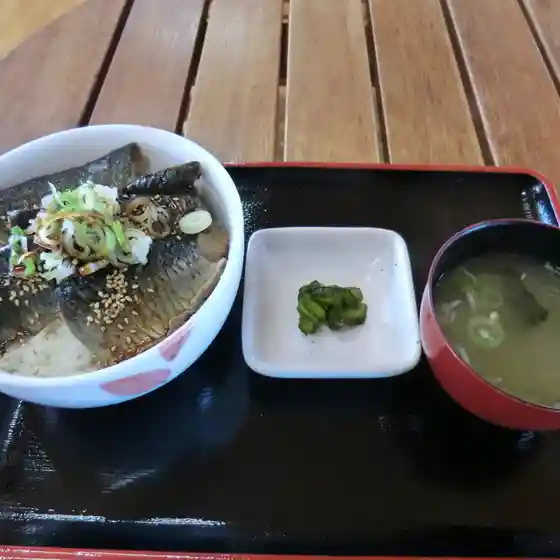
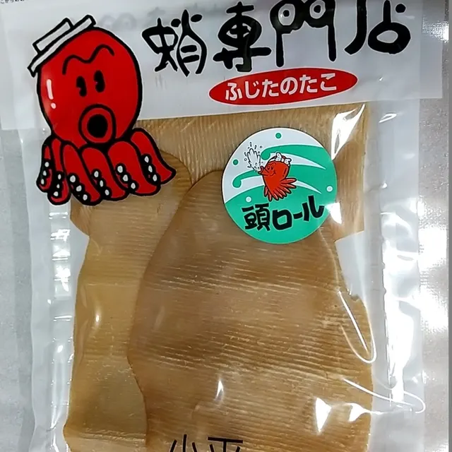
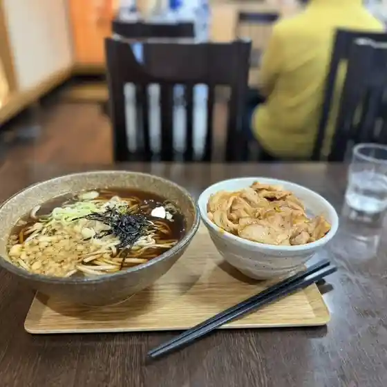

Obira
Obira · Hokkaido
Obira
Highlighted on the Hokkaido map.

Stay
ゆったりかん
Yuttarikan
Town-run onsen lodging in Obira, Hokkaido.
Dining
道の駅 おびら鰊番屋

Michi No Eki Obira Nishin Banya
音尾旅館

Onbi Ryokan
細畑漁業部

Sai Hatake Gyogyou Bu
じょぐら

Jogura
ゆうゆうそう

Yuuyuusou
居酒屋 旅路

Izakaya Tabiji
藤田水産

Fujita Suisan
すみれ

Sumire
室矢
Muroya
そば＆カフェ からくれ
Soba & Kafe Karakure
カネタイチ 山田漁業
Kanetaichi Yamada Gyogyou
真島商店
Mashima Shouten
ゆったりかん
Yuttarikan
セイコーマート 鬼鹿店
Seikoomaato Oni Shika Mise
もっこ売店
Mokko Baiten
セイコーマート 小平店
Seikoomaato Kodaira Mise
黄陽
Ki You
(有)丸ニ永光水産 小平支店 道の駅販売所
( Ari ) Maru Ni Nagamitsu Suisan Kodaira Shiten Michi No Eki Hanbaijo
セブンイレブン 留萌小平店
Sebun'Irebun Rumoi Kodaira Mise
海の四季
Umi No Shiki
理尾レストラン
Ri O Resutoran
丸三 阿部
Marusan Abe
山田漁業部
Yamada Gyogyou Bu
Sights
Kyu Hanada Ie Banya
Kyu Hanada Ie Banya